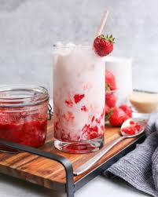

Strawberry Milk
This Homemade Strawberry Milk is loaded with the flavor of fresh
strawberries. This easy 3-ingredient strawberry syrup is made with real
ingredients, no dyes or artificial flavorings. Use fresh or frozen
strawberries and any dairy or plant-based milk that you choose. This is an
easy and fun recipe that tastes so much better than store bought strawberry
milk.

Ingredients
-
3 cups sliced strawberries (fresh or frozen), I used one 16-oz bag
frozen sliced strawberries
-
¾ cup granulated sugar
-
⅔ cup water
-
milk , preferably whole or 2%; non-dairy milk can be substituted
-
whipped cream , for topping (optional)
Instructions
-
Place the strawberries, sugar, and water in a saucepan set over medium
heat. Simmer for about 10-12 minutes, stirring occasionally, until
slightly thickened.
-
Set a fine mesh strainer over a bowl and pour the strawberry mixture
through the strainer. Use the back of a spoon to press the strawberries
against the strainer, extracting as much juice/syrup as possible. If
there is any foam on top of the syrup you can scoop it off now. Chill
the syrup.
-
To serve: pour ¾ cup of milk into a glass and add syrup to taste
(I add about 3-4 tablespoons). Stir and serve.